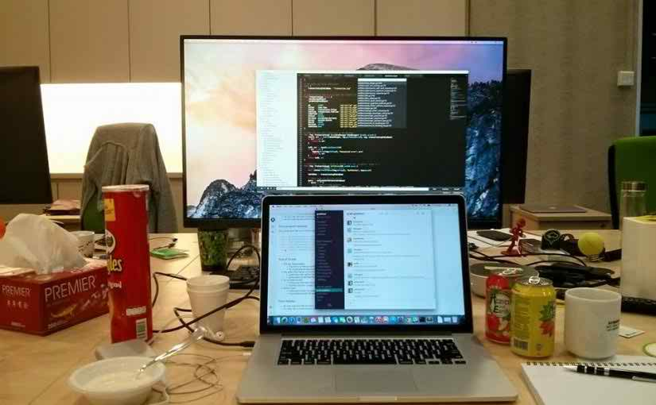

ডেভেলপমেন্টের সময় গিট ব্যবহারের সহজ ওয়ার্ক-ফ্লো

আজকালকার দিনে ভার্সন কন্ট্রোল টুল বা ভিসিএস ব্যবহার করে না এরকম টিমের দেখা পাওয়া একটু মুশকিল। ভার্সন কন্ট্রোল টুল এত উপকারী যে দেখা যায় বেশীর ভাগ ডেভেলপার একা কাজ করলেও বা সিংগেল ম্যান প্রজেক্ট হলেও সোর্স কোড সফলভাবে ম্যানেজ করার জন্য কোন না কোন টুল ব্যবহার করে থাকে। বর্তমানে জনপ্রিয়তার দিক দিয়ে ভার্সন কন্ট্রোল টুল গুলোর মাঝে গিট (git), সাবভার্সন (svn), মারকুরিয়াল, বাজার ইত্যাদি বেশি প্রচলিত।
সফটওয়্যার ডেভেলপমেন্ট -র ক্লাসিক ভুলগুলো
একটা সফটওয়্যার ডেভেলপমেন্ট প্রজেক্টে অনেক সময়ই কিছু খুব সাধারণ ভুল করা হয়, বা ভুল সিদ্ধান্ত নেয়া হয় - যা মোটমুটি নিশ্চিত ভাবেই প্রজেক্টটার ফেল অথবা বাজে রেজাল্ট কিংবা ডেলিভারি দেরী হওয়ার কারণ হয়ে দাড়ায়। লোকজন যে ইচ্ছা করেই এইসব “ভুল” করে তা কিন্তু না, এগুলোর পেছনে কিছু “লোভনীয় যুক্তি” আছে, আর ভালো ফল পাওয়া যাবে ভেবেই লোকজন তা করে। কিন্তু এত বেশি সংখ্যক বার, এত বেশিসংখ্যক লোকজন এইসব ভুল করেছে, আর তার ফলে প্রজেক্ট ফেল করেছে বা আশানুরূপ ফল হয় নাই যে, এইসব ভুল গুলোকে এখন “ক্লাসিক ভুল” বলা হয়। এইরকম কয়েকটা পরিস্থিতি
সফটওয়্যার ইন্ডাস্ট্রিতে আসার আগে
তোমরা যারা কম্পিউটার সায়েন্স বা কাছাকাছি কোনো বিষয়ে পড়ছ এবং শীঘ্রই বিশ্ববিদ্যালয়ের গণ্ডি অতিক্রম করে যাবে, তাদের বেশিরভাগই কাজ খুঁজে নেবে সফটওয়্যার ইন্ডাস্ট্রিতে। কম্পিউটার বিজ্ঞানের মৌলিক ধারণার ওপর শক্ত ভিত্তি ও প্রোগ্রামিংয়ে যথেষ্ট দক্ষতা থাকা সত্ত্বেও তোমাদের অনেকের মধ্যেই অনেক দুশ্চিন্তা কাজ করে, আর কী কী শিখতে হবে, কিভাবে শিখব, কতটুকু শিখব এরকম অনেক প্রশ্ন উঁকি দেয় মনে। আজকে আমি পাঁচটি জিনিসের কথা বলব, যেগুলো আমি প্রত্যাশা করি একজন নতুন কম্পিউটার সায়েন্স গ্রাজুয়েট আগে থেকেই জেনে আসবে। যদিও আমি নিজে যখন পাশ করি, তখন এসব জানতাম না, তবে সেটা অনেক অনেক বছর আগের কথা। বর্তমান সময়ে এগুলো না জানলেই নয়।
লিনাক্সে বাংলালায়ন মডেম দিয়ে https যুক্ত কিছু সাইটে এক্সেস করতে না পারার সমাধান।

সমস্যাটার ভুক্তভোগী আজ ৪ মাস ধরে। উবুন্টু লিনাক্স থেকে বাংলালায়ন মডেম দিয়ে ফেসবুক, জিমেইল, ওডেক্স বা গিটহাবের মত সাইটগুলোতে ঢুকতে পারতাম না। সমস্যা সমাধানে গুগল সার্চের বিভিন্ন সমাধান ইমপ্লিমেন্ট করেও কাজ হল না। বাংলালায়ন কাস্টমার কেয়ারও ঠিকমত সমাধান দিতে পারল না।শেষ পর্যন্ত যে সমাধানটা পেলাম তা হল MTU ভেল্যু চেঞ্জ করে ১৪০০ দিতে হবে। তাহলেই কাজ হবে।
সফটওয়্যার ইঞ্জিনিয়ারিং ইন্টারভিউ
সফটওয়্যার ইঞ্জিনিয়ারিং ক্যারিয়ার নিয়ে ধারাবাহিক তবে বিক্ষিপ্ত একটি সিরিজের প্রথম লেখা এটি। আজকের লেখার মূল বিষয় হচ্ছে ইন্টারভিউতে কোন বিষয়গুলোর ওপর জোর দেওয়া হয়, সেই সম্পর্কে ধারণা দেওয়া। তুমি কোন দেশের নাগরিক, কোন বিশ্ববিদ্যালয় থেকে পাশ করা – সফটওয়্যার ইঞ্জিনিয়ার হিসেবে চাকরি করার জন্য এসব তেমন গুরুত্বপূর্ণ ব্যাপার নয়। যাদের প্রোগ্রামিং ও প্রবলেম সলভিং স্কিল খুব ভালো, তাদের জন্য পৃথিবীর বড় বড় কোম্পানীগুলোর দুয়ার খোলা। আর এরকম কোম্পানী কেবল একটি-দুটি নয়, বরং শতশত কোম্পানী।